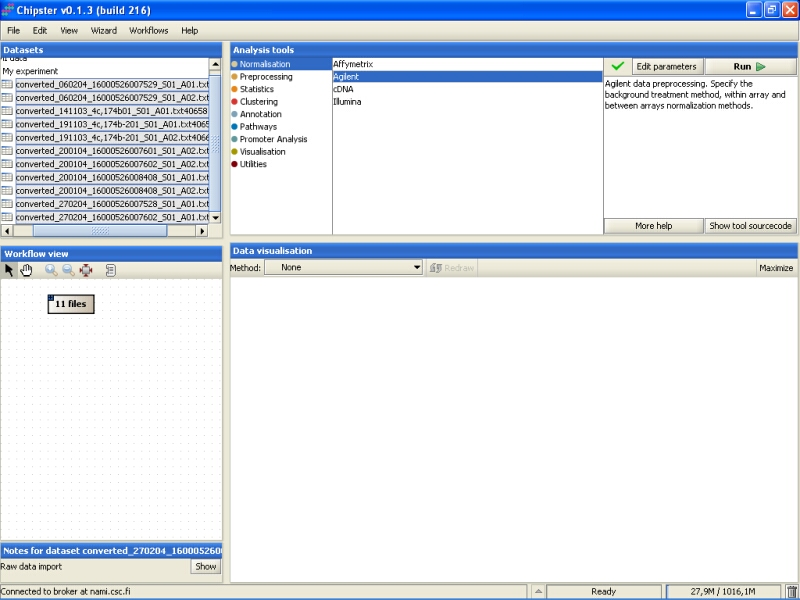
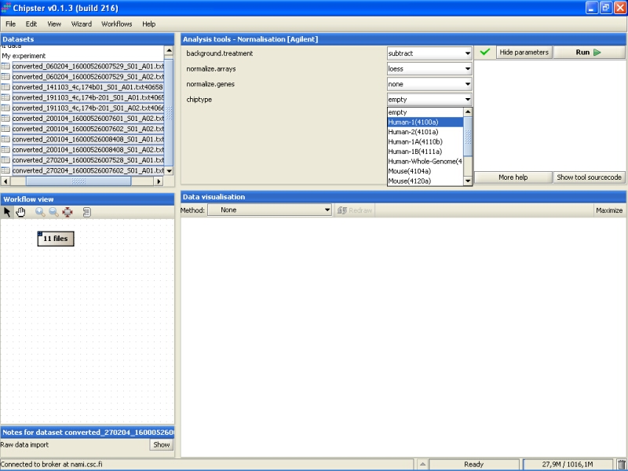
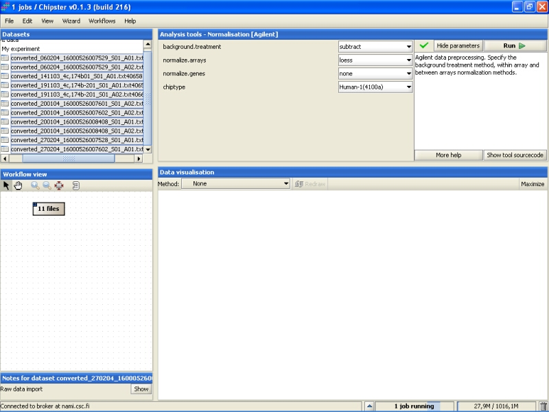
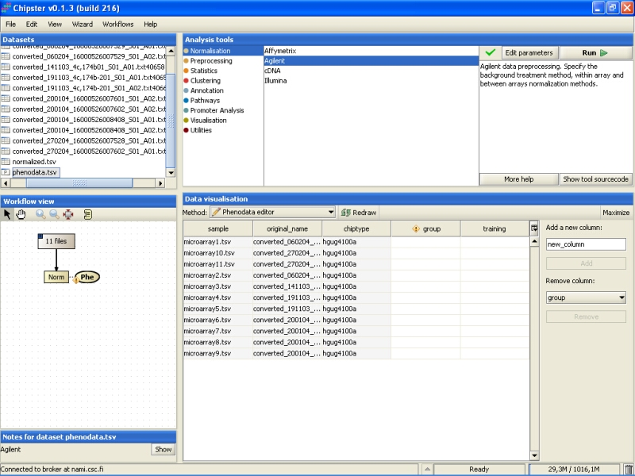
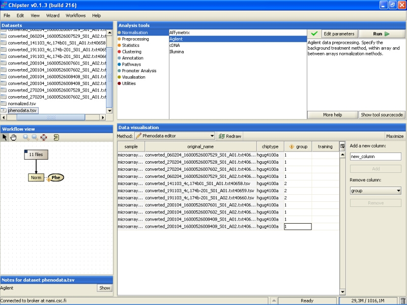

Select the files you want to normalize. In order to normalize all chips in the same dataset together, you need to select them all (double-click on the folder). Then select Normalization / Agilent from the Analysis tools:
Normalization parameters can be modified by clicking the Edit parameters -button. For Agilent data, user can select background correction method, chip-wise normalization and gene-wise normalization methods. In addition, user must select the chiptype:
Background intensities are usually subtracted from the spot (foreground) intensities, but user can turn this option off. In addition to simple subtraction, Edwards method can be used. Sometimes simple background subtraction produces negative corrected values. This can be avoided using Edwards method for background correction.
Chips (arrays) can be normalized using median translation of lowess method. Chips can also be left unnormalized, if they have been normalized earlier.
Genes can be left unnormalized, which is the default option, since to make chips comparable, it is enough to normalize just the chips. Genes can be normalized by scaling (subtract the mean and divide by standard deviation) or by quantile method. Gene-wise normalization will affect the results of most statistical procedures and plotting functions.
After modifying the setting, click the Run-button to run the normalization. A blue bar starts moving in the lower-right corner. That indicates that a job is being run.
Normalization can take a rather long time (several minutes) depending on the type of normalization you have chosen. After the job is done, a new file (normalized.txt) should appear under the current folder in the Datasets.
Note that in the Workflow view the normalized data is coupled with phenodata. The next step would be to fill in the phenodata table, at least the group column, and describe the experimental design for the system. Group could be anything interesting. For example, if one is comparing cancer patients to their healthy controls, the controls would be the group number one and the cancer patients group number two.
Click on the phenodata in the Workflow view to select it. Go to Data visualization, and select phenodata editor from the pull down menu.
Fill in the column called group according to the experimental variable you would like to test in the further analysis. You can rearrange the phenodata rows according to the original name by clicking on the column header. Every row represents one chip, and the group column should be filled for every chip. No empty cells or strings are allowed. You should type one number in every cell.
Once the group column in the phenodata has been filled, the small exclamation mark beside the phenodata in the Workflow view disappears to signal that you are ready to analyse the dataset.
Further analysis, such as filtering, statistical testing, clustering, etc. can now be performed using this normalized dataset.